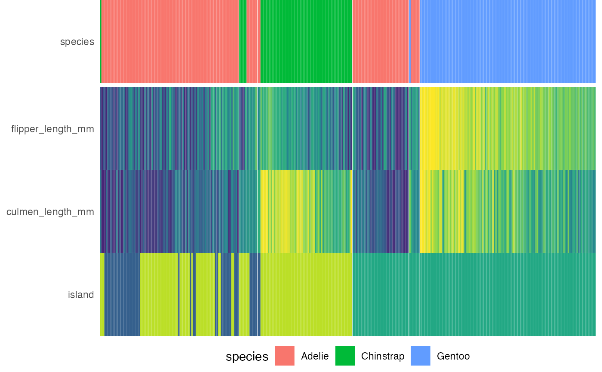

Draws the heatmap to be placed below the decision tree.
draw_heat(
dat,
fit,
feat_types = NULL,
target_cols = NULL,
target_lab_disp = fit$target_lab,
trans_type = c("percentize", "normalize", "scale", "none"),
clust_feats = TRUE,
feats = NULL,
show_all_feats = FALSE,
p_thres = 0.05,
cont_legend = "none",
cate_legend = "none",
cont_cols = ggplot2::scale_fill_viridis_c,
cate_cols = ggplot2::scale_fill_viridis_d,
panel_space = 0.001,
target_space = 0.05,
target_pos = "top"
)Dataframe with samples from original dataset ordered according to the clustering within each leaf node.
party object, e.g., as output from partykit::ctree()
Named vector indicating the type of each features, e.g., c(sex = 'factor', age = 'numeric'). If feature types are not supplied, infer from column type.
Character vectors representing the hex values of different level colors for targets, defaults to viridis option B.
Character string for displaying the label of target label. If not provided, use `target_lab`.
Character string of 'normalize', 'scale' or 'none'. If 'scale', subtract the mean and divide by the standard deviation. If 'normalize', i.e., max-min normalize, subtract the min and divide by the max. If 'none', no transformation is applied. More information on what transformation to choose can be acquired here: https://cran.rstudio.com/package=heatmaply/vignettes/heatmaply.html#data-transformation-scaling-normalize-and-percentize
Logical. If TRUE, performs cluster on the features.
Character vector of feature names to be displayed in the heatmap. If NULL, display features of which P values are less than `p_thres`.
Logical. If TRUE, show all features regardless of `p_thres`.
Numeric value indicating the p-value threshold of feature importance. Feature with p-values computed from the decision tree below this value will be displayed on the heatmap.
Function determining the options for legend of continuous variables, defaults to FALSE. If TRUE, use `guide_colorbar(barwidth = 10, barheight = 0.5, title = NULL)`. Any other [`guides()`](https://ggplot2.tidyverse.org/reference/guides.html) functions would also work.
Function determining the options for legend of categorical variables, defaults to FALSE. If TRUE, use `guide_legend(title = NULL)`. Any other [`guides()`](https://ggplot2.tidyverse.org/reference/guides.html) functions would also work.
Function determining color scale for continuous variable, defaults to `scale_fill_viridis_c(guide = cont_legend)`.
Function determining color scale for nominal categorical variable, defaults to `scale_fill_viridis_d(begin = 0.3, end = 0.9)`.
Spacing between facets relative to viewport, recommended to range from 0.001 to 0.01.
Numeric value indicating spacing between the target label and the rest of the features
Character string specifying the position of the target label on heatmap, can be 'top', 'bottom' or 'none'.
A ggplot2 grob object of the heatmap.
x <- compute_tree(penguins, target_lab = 'species')
draw_heat(x$dat, x$fit)
#> Scale for 'y' is already present. Adding another scale for 'y', which will
#> replace the existing scale.
